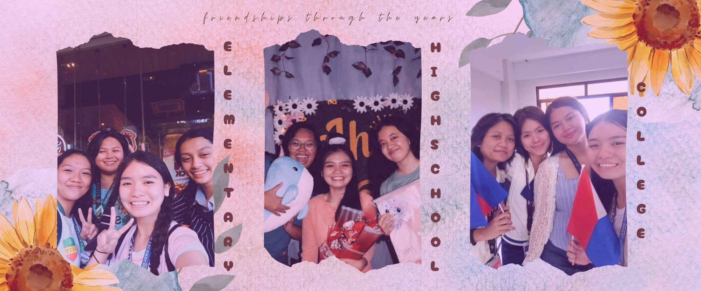

My name is Jhane Carlyn C. Gabiana, and I am from Purok 2 San Jose Cebu City, Philippines. I am currently a second-year student at Cebu Technological University taking up a course in Bachelor of Science in Information Technology.
I come from a family that is not that poor but also not rich. I have two sisters and I am the middle child. Being aware of my family’s financial situation, I decided to go with BSIT in CTU Main Campus instead of pursuing Medical Technology in UC-Banilad. It is a practical choice and I am trying my best to find passion in where I’m at right now but it still is a rough road ahead especially when I’m still very much struggling with coding on my own and I still find it difficult to understand my programming subjects. Even so, I still choose to continue because I want to graduate and look for high-paying jobs so I can help my parents live a comfortable life in the future and I want to be able to go shopping as many times as I want with my sisters. I am a person who values fairness and kindness. I believe in the works of karma as they say that what comes around, goes around. Also, a little bit more information about me is that I really love singing and I also find it fun to watch and sing along to lyric videos of JPOP and KPOP music.
| LEVEL | SCHOOL | YEAR |
|---|---|---|
| ELEMENTARY | TALAMBAN ELEMENTARY SCHOOL | 2017 (GRADUATED) |
| JUNIOR HIGH | TALAMBAN NATIONAL HIGH SCHOOL | 2020 (GRADUATED) |
| SENIOR HIGH | TALAMBAN NATIONAL HIGH SCHOOL | 2022 (GRADUATED) |
| COLLEGE | CEBU TECHNOLOGICAL UNIVERSITY | 2024 (CURRENT) |
I am currently a second-year student studying at Cebu Technological University pursuing a degree in Bachelor of Science in Information Technology.
